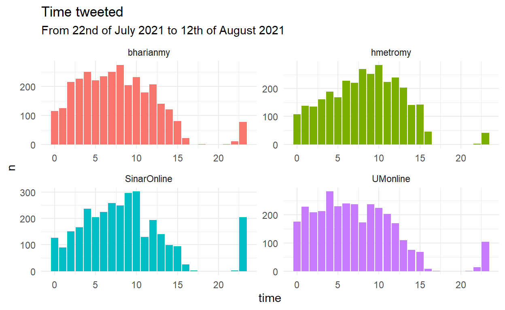
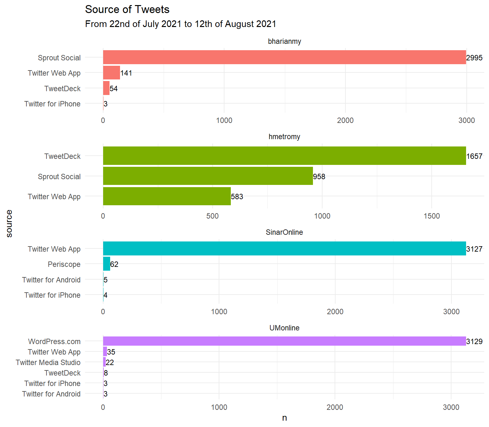
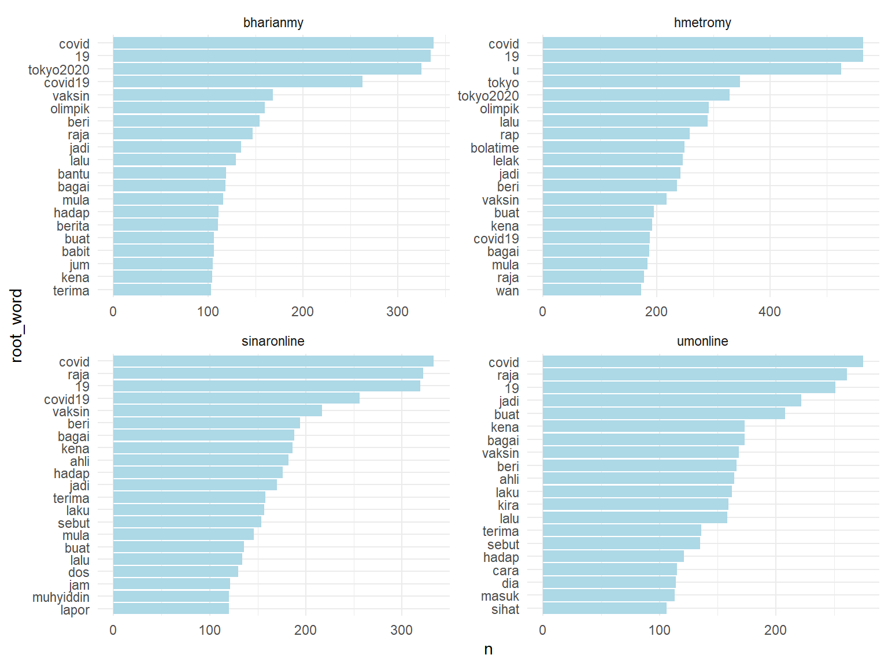

Analyzing Malaysia’s News Twitter Accounts using malaytextr & tidytext from R-Studio
This blog post will be focusing on analyzing 4 Malaysia’s News Twitter Accounts:
Our aim for this is to show how to perform simple text analysis using malaytextr and tidytext packages! The dataset that we will use is extracted from twitter and can be downloaded from the github:
malay_news <- read_csv("https://raw.githubusercontent.com/zahiernasrudin/datasets/main/malay_news.csv")
Information about the dataset: It has 12,789 obsevations and 90 columns
glimpse(malay_news)
Rows: 12,789
Columns: 90
$ user_id <chr> "x331383958", "x331383958", "x331383~
$ status_id <chr> "x1425733752425095170", "x1425733215~
$ created_at <dttm> 2021-08-12 08:19:50, 2021-08-12 08:~
$ screen_name <chr> "SinarOnline", "SinarOnline", "Sinar~
$ text <chr> "Sebuah tabung khas berkaitan pengur~
$ source <chr> "Twitter Web App", "Twitter Web App"~
$ display_text_width <dbl> 150, 195, 200, 221, 146, 170, 198, 2~
$ reply_to_status_id <chr> NA, NA, NA, NA, NA, NA, NA, NA, NA, ~
$ reply_to_user_id <chr> NA, NA, NA, NA, NA, NA, NA, NA, NA, ~
$ reply_to_screen_name <chr> NA, NA, NA, NA, NA, NA, NA, NA, NA, ~
$ is_quote <lgl> FALSE, FALSE, FALSE, FALSE, FALSE, F~
$ is_retweet <lgl> FALSE, FALSE, FALSE, FALSE, FALSE, F~
$ favorite_count <dbl> 3, 3, 1, 5, 8, 3, 2, 10, 17, 3, 20, ~
$ retweet_count <dbl> 1, 1, 0, 1, 1, 1, 1, 3, 6, 0, 5, 0, ~
$ quote_count <lgl> NA, NA, NA, NA, NA, NA, NA, NA, NA, ~
$ reply_count <lgl> NA, NA, NA, NA, NA, NA, NA, NA, NA, ~
$ hashtags <chr> "sinarharian", "sinarharian johor", ~
$ symbols <lgl> NA, NA, NA, NA, NA, NA, NA, NA, NA, ~
$ urls_url <chr> "bit.ly/37EMvPD", "bit.ly/3fYgoyN", ~
$ urls_t.co <chr> "https://t.co/fkQC2dXwnc", "https://~
$ urls_expanded_url <chr> "https://bit.ly/37EMvPD", "https://b~
$ media_url <chr> NA, NA, NA, NA, NA, NA, NA, NA, "htt~
$ media_t.co <chr> NA, NA, NA, NA, NA, NA, NA, NA, "htt~
$ media_expanded_url <chr> NA, NA, NA, NA, NA, NA, NA, NA, "htt~
$ media_type <chr> NA, NA, NA, NA, NA, NA, NA, NA, "pho~
$ ext_media_url <chr> NA, NA, NA, NA, NA, NA, NA, NA, "htt~
$ ext_media_t.co <chr> NA, NA, NA, NA, NA, NA, NA, NA, "htt~
$ ext_media_expanded_url <chr> NA, NA, NA, NA, NA, NA, NA, NA, "htt~
$ ext_media_type <lgl> NA, NA, NA, NA, NA, NA, NA, NA, NA, ~
$ mentions_user_id <chr> NA, NA, NA, NA, NA, NA, NA, NA, NA, ~
$ mentions_screen_name <chr> NA, NA, NA, NA, NA, NA, NA, NA, NA, ~
$ lang <chr> "in", "in", "in", "in", "in", "in", ~
$ quoted_status_id <lgl> NA, NA, NA, NA, NA, NA, NA, NA, NA, ~
$ quoted_text <lgl> NA, NA, NA, NA, NA, NA, NA, NA, NA, ~
$ quoted_created_at <lgl> NA, NA, NA, NA, NA, NA, NA, NA, NA, ~
$ quoted_source <lgl> NA, NA, NA, NA, NA, NA, NA, NA, NA, ~
$ quoted_favorite_count <lgl> NA, NA, NA, NA, NA, NA, NA, NA, NA, ~
$ quoted_retweet_count <lgl> NA, NA, NA, NA, NA, NA, NA, NA, NA, ~
$ quoted_user_id <lgl> NA, NA, NA, NA, NA, NA, NA, NA, NA, ~
$ quoted_screen_name <lgl> NA, NA, NA, NA, NA, NA, NA, NA, NA, ~
$ quoted_name <lgl> NA, NA, NA, NA, NA, NA, NA, NA, NA, ~
$ quoted_followers_count <lgl> NA, NA, NA, NA, NA, NA, NA, NA, NA, ~
$ quoted_friends_count <lgl> NA, NA, NA, NA, NA, NA, NA, NA, NA, ~
$ quoted_statuses_count <lgl> NA, NA, NA, NA, NA, NA, NA, NA, NA, ~
$ quoted_location <lgl> NA, NA, NA, NA, NA, NA, NA, NA, NA, ~
$ quoted_description <lgl> NA, NA, NA, NA, NA, NA, NA, NA, NA, ~
$ quoted_verified <lgl> NA, NA, NA, NA, NA, NA, NA, NA, NA, ~
$ retweet_status_id <lgl> NA, NA, NA, NA, NA, NA, NA, NA, NA, ~
$ retweet_text <lgl> NA, NA, NA, NA, NA, NA, NA, NA, NA, ~
$ retweet_created_at <lgl> NA, NA, NA, NA, NA, NA, NA, NA, NA, ~
$ retweet_source <lgl> NA, NA, NA, NA, NA, NA, NA, NA, NA, ~
$ retweet_favorite_count <lgl> NA, NA, NA, NA, NA, NA, NA, NA, NA, ~
$ retweet_retweet_count <lgl> NA, NA, NA, NA, NA, NA, NA, NA, NA, ~
$ retweet_user_id <lgl> NA, NA, NA, NA, NA, NA, NA, NA, NA, ~
$ retweet_screen_name <lgl> NA, NA, NA, NA, NA, NA, NA, NA, NA, ~
$ retweet_name <lgl> NA, NA, NA, NA, NA, NA, NA, NA, NA, ~
$ retweet_followers_count <lgl> NA, NA, NA, NA, NA, NA, NA, NA, NA, ~
$ retweet_friends_count <lgl> NA, NA, NA, NA, NA, NA, NA, NA, NA, ~
$ retweet_statuses_count <lgl> NA, NA, NA, NA, NA, NA, NA, NA, NA, ~
$ retweet_location <lgl> NA, NA, NA, NA, NA, NA, NA, NA, NA, ~
$ retweet_description <lgl> NA, NA, NA, NA, NA, NA, NA, NA, NA, ~
$ retweet_verified <lgl> NA, NA, NA, NA, NA, NA, NA, NA, NA, ~
$ place_url <lgl> NA, NA, NA, NA, NA, NA, NA, NA, NA, ~
$ place_name <lgl> NA, NA, NA, NA, NA, NA, NA, NA, NA, ~
$ place_full_name <lgl> NA, NA, NA, NA, NA, NA, NA, NA, NA, ~
$ place_type <lgl> NA, NA, NA, NA, NA, NA, NA, NA, NA, ~
$ country <lgl> NA, NA, NA, NA, NA, NA, NA, NA, NA, ~
$ country_code <lgl> NA, NA, NA, NA, NA, NA, NA, NA, NA, ~
$ geo_coords <chr> "NA NA", "NA NA", "NA NA", "NA NA", ~
$ coords_coords <chr> "NA NA", "NA NA", "NA NA", "NA NA", ~
$ bbox_coords <chr> "NA NA NA NA NA NA NA NA", "NA NA NA~
$ status_url <chr> "https://twitter.com/SinarOnline/sta~
$ name <chr> "SinarOnline", "SinarOnline", "Sinar~
$ location <chr> "Malaysia", "Malaysia", "Malaysia", ~
$ description <chr> "SINAR HARIAN versi Twitter memapark~
$ url <chr> "http://t.co/o3ex3PhhqP", "http://t.~
$ protected <lgl> FALSE, FALSE, FALSE, FALSE, FALSE, F~
$ followers_count <dbl> 756530, 756530, 756530, 756530, 7565~
$ friends_count <dbl> 578, 578, 578, 578, 578, 578, 578, 5~
$ listed_count <dbl> 800, 800, 800, 800, 800, 800, 800, 8~
$ statuses_count <dbl> 584302, 584302, 584302, 584302, 5843~
$ favourites_count <dbl> 766, 766, 766, 766, 766, 766, 766, 7~
$ account_created_at <dttm> 2011-07-08 02:51:57, 2011-07-08 02:~
$ verified <lgl> FALSE, FALSE, FALSE, FALSE, FALSE, F~
$ profile_url <chr> "http://t.co/o3ex3PhhqP", "http://t.~
$ profile_expanded_url <chr> "http://www.sinarharian.com.my", "ht~
$ account_lang <lgl> NA, NA, NA, NA, NA, NA, NA, NA, NA, ~
$ profile_banner_url <chr> "https://pbs.twimg.com/profile_banne~
$ profile_background_url <chr> "http://abs.twimg.com/images/themes/~
$ profile_image_url <chr> "http://pbs.twimg.com/profile_images~All of the 4 Twitter news accounts tweeted mostly during the morning and then started to slow down after 3 p.m. Then they started to tweet again after 8 p.m.
malay_news %>%
mutate(time = hour(created_at)) %>%
count(time, screen_name) %>%
ggplot(aes(x = time, y = n, fill = screen_name)) +
geom_col(show.legend = F) +
facet_wrap(~ screen_name, scales = "free") +
labs(title = "Time tweeted",
subtitle = "From 22nd of July 2021 to 12th of August 2021")

What did they use to tweet?
malay_news %>%
count(screen_name, source) %>%
mutate(source = reorder_within(source, n, screen_name)) %>%
ggplot(aes(x = source, y = n, fill = screen_name)) +
geom_col(show.legend = F) +
geom_text(aes(label= n),
vjust=0.5, hjust=0, size = 3.2)+
facet_wrap(~ screen_name, scales = "free", ncol = 1) +
coord_flip() +
scale_x_reordered() +
labs(title = "Source of Tweets",
subtitle = "From 22nd of July 2021 to 12th of August 2021")

To get the word frequencies, we will first remove the urls, perform word tokenization & stemming and remove the stopwords.
This is a new function from malaytextr called remove_url(). What it does is pretty straightforward, it will remove URLs from a string.
Table below shows a glimpse of the dataset in which the links have been removed (text_clean) column
malay_news_clean1 <- malay_news %>%
select(created_at, screen_name, text, source) %>%
mutate(text_clean = remove_url(text))
# Table
reactable(head(malay_news_clean1),
highlight = T,
columns = list(
created_at = colDef(width = 150),
screen_name = colDef(width = 150),
text = colDef(width = 1000),
text_clean = colDef(width = 1000)
))
We will then perform word tokenization using unnest_tokens() from tidytext and stem_malay() from malaytextr.
A glimpse once word tokenization & word stemming have been performed:
malay_news_clean2 <- malay_news_clean1 %>%
select(-text) %>%
unnest_tokens(output=word, input= text_clean) %>%
stem_malay(dictionary = malayrootwords,
col_feature1 = "word")
reactable(head(malay_news_clean2),
highlight = T)
malay_stopwords <- data.frame(stopword = stopwords("ms", source = "stopwords-iso"))
malay_news_clean3 <- malay_news_clean2 %>%
anti_join(malay_stopwords, by = c("root_word" = "stopword")) %>%
filter(!str_detect(root_word,
"sinarhari|bhnasional|kualalumpur|bhdunia|umnasional|bhsu|sinarpremium|bhwilayah|bhbisnes|bhhibur|bh|bhkes"))
Showing the top 20 most common words across Berita Harian, Harian Metro, Sinar and Utusan Malaysia
For Berita Harian (bharianmy) & Harian Metro (hmetromy):
For Sinar (sinaronline) & Utusan Malaysia (umonline):
malay_news_clean3 %>%
count(screen_name, root_word, sort = T) %>%
group_by(screen_name) %>%
slice_max(n, n = 20) %>%
mutate(root_word = reorder_within(root_word, n, screen_name)) %>%
ggplot(aes(x = root_word, n)) +
geom_col(fill = "light blue") +
coord_flip() +
scale_x_reordered() +
facet_wrap(~ screen_name, scales = "free")

To summarize,
We plot the distribution (When did they tweet)
We plot the source of the tweets
We plot the word frequencies. In order to do that:
We remove the urls using remove_url from malaytextr package
We perform word tokenization using unnest_tokens from tidytext package
We perform word stemming using stem_malay from malaytextr package
We remove stopwords from stopwords package
Please let me what you think. Thanks!